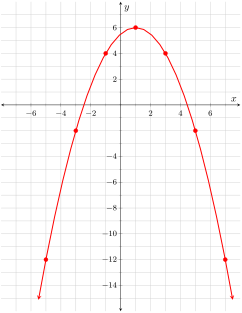
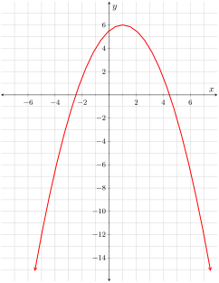
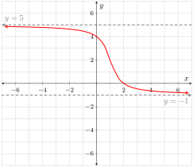
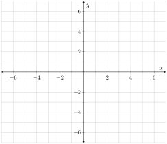
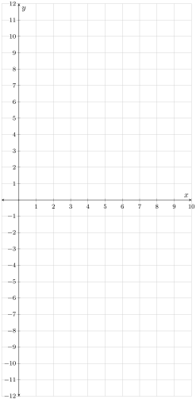

Much information about a function’s first derivative can be gleaned simply by looking at a graph of the function. In fact, a person with good visual skills can “see” the graph of the derivative while looking at the graph of the function. This activity focuses on helping you develop that skill.
ExercisesExercises
Exercise Group.
A parabolic function is shown in Figure 4.2.1. The next several questions are in reference to that function.
Figure4.2.1.\(y=\fe{g}{x}\)
Figure4.2.2.\(y=\fe{g}{x}\)
\(x\)
\(y\)
\(-5\)
\(6\)
\(-3\)
\(-1\)
\(2\)
\(1\)
\(3\)
\(-2\)
\(5\)
\(-4\)
\(7\)
Table4.2.3.
1.
Several values of \(\fd{g}\) are given in Table 4.2.3. For each given value of \(x\) draw onto Figure 4.2.1 a nice long line segment at the corresponding point on \(g\) whose slope is equal to the value of \(\fd{g}\text{.}\) If we think of these line segments as actual lines, what do we call the lines?
2.
What is the value of \(\fe{\fd{g}}{1}\text{?}\) How do you know? Enter that value into Table 4.2.3.
3.
The function \(g\) is symmetric across the line \(x=1\text{;}\) that is, if we move equal distance to the left and right from this line the corresponding \(y\)-coordinates on \(g\) are always equal. Notice that the slopes of the tangent lines are “equal but opposite” at points that are equally removed from the axis of symmetry; this is reflected in the values of \(\fe{\fd{g}}{-1}\) and \(\fe{\fd{g}}{3}\text{.}\) Use the idea of “equal but opposite slope equidistant from the axis of symmetry” to complete Table 4.2.3.
4.
Plot the points from Table 4.2.3 onto Figure 4.2.2 and connect the dots. Determine the formula for the resultant linear function.
5.
The formula for \(\fe{g}{x}\) is \(-0.5x^2+x+5.5\text{.}\) Use Definition 3.3.1 to determine the formula for \(\fe{\fd{g}}{x}\text{.}\)
6.
The line you drew onto Figure 4.2.2 is not a tangent line to \(g\text{.}\) Just what exactly is this line?
Exercise Group.
A function \(f\) is shown in Figure 4.2.4 and the corresponding first derivative function \(\fd{f}\) is shown in Figure 4.2.5. Answer each of the following questions referencing these two functions.
Figure4.2.4.\(y=\fe{f}{x}\)
Figure4.2.5.\(y=\fe{\fd{f}}{x}\)
7.
Draw the tangent line to \(f\) at the three points indicated in Figure 4.2.4 after first using the graph of \(\fd{f}\) to determine the exact slope of the respective tangent lines.
8.
Write a sentence relating the slope of the tangent line to \(f\) with the corresponding \(y\)-coordinate on \(\fd{f}\text{.}\)
9.
Copy each of the following sentences onto your paper and supply the words or phrases that correctly complete each sentence.
Over the interval where \(\fd{f}\) is negative, \(f\) is …
Over the interval where \(\fd{f}\) is positive, \(f\) is …
Over the interval where \(\fd{f}\) is increasing, \(f\) is …
Over the interval where \(\fd{f}\) is decreasing, \(f\) is …
10.
In each of Figures 4.2.6 and Figure 4.2.7 a function (the solid curve) is given; both of these functions are symmetric about the \(y\)-axis. The first derivative of each function (the dash-dotted curves) have been drawn over the interval \(\ointerval{0}{7}\text{.}\) Use the given portion of the first derivative together with the symmetry of the function to help you draw each first derivative over the interval \(\ointerval{-7}{0}\text{.}\) Please note that a function that is symmetric across a vertical line has a first derivative that is symmetric about a point. Similarly, a function that is symmetric about a point has a first derivative that is symmetric across a vertical line.
Figure4.2.6.\(y=\fe{f}{x}\) and part of the curve \(y=\fe{\fd{f}}{x}\)
Figure4.2.7.\(y=\fe{f}{x}\) and part of the curve \(y=\fe{\fd{f}}{x}\)
Exercise Group.
A graph of the function \(h\) given by \(\fe{h}{x}=\frac{1}{x}\) is shown in Figure 4.2.8.
Figure4.2.8.\(y=\fe{h}{x}=\frac{1}{x}\)
Figure4.2.9.\(y=\fe{\fd{h}}{x}\)
11.
Except at \(0\text{,}\) there is something that is always true about the value of \(\fd{h}\text{;}\) what is the common trait?
12.
Use Definition 3.3.1 to find the formula for \(\fe{\fd{h}}{x}\text{.}\)
13.
Does the formula for \(\fe{\fd{h}}{x}\) support your answer to Exercise 4.2.11?
14.
Use the formula for \(\fe{\fd{h}}{x}\) to determine the horizontal and vertical asymptotes to the graph of \(y=\fe{\fd{h}}{x}\text{.}\)
15.
Keeping it simple, draw onto Figure 4.2.9 a curve with the asymptotes found in Exercise 4.2.14 and the property determined in Exercise 4.2.11. Does the curve you drew have the properties you would expect to see in the first derivative of \(h\text{?}\) For example, \(h\) is concave down over \(\ointerval{-\infty}{0}\text{,}\) and concave up over \(\ointerval{0}{\infty}\text{;}\) what are the corresponding differences in the behavior of \(\fd{h}\) over those two intervals?
16.
A graph of the function \(g\) is shown in Figure 4.2.10. The absolute minimum value ever obtained by \(\fd{g}\) is \(-3\text{.}\) With that in mind, draw \(\fd{g}\) onto Figure 4.2.11. Make sure that you draw and label any and all necessary asymptotes. Please note that \(g\) is symmetric about the point \(\point{1}{2}\text{.}\)
Figure4.2.10.\(y=\fe{g}{x}\)
Figure4.2.11.\(y=\fe{\fd{g}}{x}\)
Exercise Group.
Answer the following questions in reference to the function \(w\text{,}\) shown in Figure 4.2.12.
Figure4.2.12.\(y=\fe{w}{x}\)
17.
An inflection point is a point where the function is continuous and the concavity of the function changes.
The inflection points on \(w\) occur at \(2\text{,}\)\(3.25\text{,}\) and \(6\text{.}\) With that in mind, over each interval stated in Table 4.2.13 exactly two of the properties from its caption apply to \(\fd{w}\text{.}\) Complete Table 4.2.13 with the appropriate pairs of properties.
In Table 4.2.14, three possible values are given for \(\fd{w}\) at several values of \(x\text{.}\) In each case, one of the values is correct. Use tangent lines to \(w\) to determine each of the correct values.
\(x\)
Proposed values
\(0\)
\(\sfrac{2}{3}\) or \(\sfrac{8}{3}\) or \(\sfrac{28}{3}\)
\(1\)
\(\sfrac{1}{2}\) or \(\sfrac{3}{2}\) or \(\sfrac{5}{2}\)
\(3\)
\(\sfrac{1}{3}\) or \(1\) or \(3\)
\(5\)
\(-\sfrac{1}{2}\) or \(-1\) or \(-\sfrac{3}{2}\)
\(6\)
\(-\sfrac{4}{3}\) or \(-\sfrac{8}{3}\) or \(-4\)
\(8\)
\(1\) or \(6\) or \(12\)
Table4.2.14.
Figure4.2.15.\(y=\fe{\fd{w}}{x}\)
19.
The value of \(\fd{w}\) is the same at \(2\text{,}\)\(4\text{,}\) and \(7\text{.}\) What is this common value?
20.
Put it all together and draw \(\fd{w}\) onto Figure 4.2.15.

![the graph of a function; the curve enters from below at about (-4.2,-7), heading slightly to the right as it mainly moves upward; near (-2.5,6), the curve bends by a lot, smoothly, until it reaches about (-2,6.2), at which point the curve turns around and begins moving predominantly downward and to the right; it passes through (0,1); as it reaches about (1.5,-4), the curve bends by a lot, smoothly, so that it reaches about (2,-4.2) and turns around again; from here it moves predominantly upward and to the right, passing through (3,-2), and exiting the graph at about (4,7)](generated/latex-image/figure-cubic-2.svg)
![the graph of a function; the overall appearance resembles a parabola, although there is no solid evidence that it is a true parabola; the curve enters from above at about (-3.5,7), moving mostly downward and slightly to the right; as it moves downward, it tapers more and more, passing through -2 on the x-axis, and then smoothly flattening out at -4 on the y-axis; then the curve bends upward, bending more and more upward as it moves to the right; it passes through (3,5); it exits the graph at about (3.5,7)](generated/latex-image/figure-cubic-derivative-2.svg)
![the graph of two functions; the first is identified as y=g(x), and it has an overall appearance of a sinusoidal wave; the curve enters from the left, reaching a low point at (-6,2), then a high point at (-3,6), then a low point at (0,2), then a high point at (3,6), then a low point at (6,2), and then it exits the graph to the right; a second curve is on the same graph, and is denoted y=g’(x); this curve is only partially plotted; only the portion on the right half of the graph is plotted; this curve also appears to have a sinusoidal shape; the part we see abruptly starts at (0,0), moving up to a peak at (1.5,2), then down to a low point at (4.5,2), then upward exiting the graph at about (7,1.5)](generated/latex-image/figure-sine-2.svg)
![the graph of two functions; the first is identified as y=g(x); it enters the graph from the left at about (-7,3.5), moving downward and to the right with an almost constant slope; it reaches about (-1,1) and smoothly bends upward so that it becomes almost vertical; the curve exits the graph at about (-0.3,7); a second portion of this same curve comes in on the right half of the graph, symmetrically to the first portion; it comes in from the top at about (0.3,7), moves mostly downward and ever so slightly to the right until reaching about (1,1), where it smoothly bends so that it continues moving upward and to the right, with a seemingly constant slop until it exits the graph at about (7,3.5); a second curve is identified as y=g’(x); only the portion on the right half of the graph is plotted; this portion enters the graph from below at about (0.2,-7), moves mostly upward to (1,0), where it bends smoothly, so that it continues moving mostly rightward, becoming closer and closer to the horizontal line y=1/2; this portion of the curve exits the graph at about (7,1/2)](generated/latex-image/figure-rational-2.svg)
![a graph of a function whose curve has two portions; the first portion enters from the left, only a small bit below the x-axis; as it travels to the right, it slowly moves more and more downward; at about (-1,-1), it bends much more downward, moving almost vertically downward and exiting the graph a bit to the left of the y-axis; the second portion is a symmetric opposite from the first; the second portion enters the graph from the top, just to the right of the y-axis; it moves mostly straight down and slightly to the right, until at about (1,1) it smoothly bends rightward; it continues moving rightward, moving slightly downard too, until it leaves the graph on the right side slightly above the x-axis](generated/latex-image/figure-one-over-x-2.svg)

![a graph with x-axis ranging from -1 to 10, and y-axis ranging from -1 to 10; the curve enters from below, slightly to the left of the y-axis; it passes through the origin, and continues moving mostly upward for a while; but it bends more and more to the right, until it reaches about (2,5.1), where it temporarily appears to be flat; then it bends a little upward briefly, flattening out again at about (4,5.5); now the curve turns downward as it keeps traveling to the right; it eventually reaches a low point at about (7,0.7), where it smoothly turns around and travels predominantly upwards and slightly to the right; the curve exits the graph at about (8.3,10)](generated/latex-image/figure-inflection-points-2.svg)